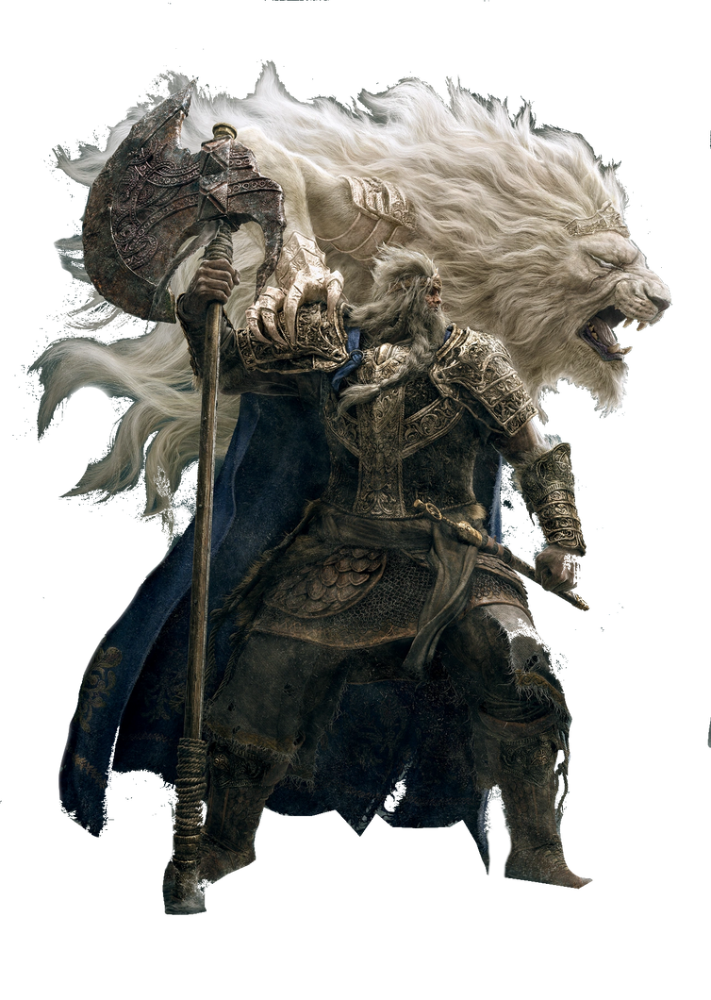

Godfrey the first elden lord
Who is Godfrey
why is he protecting the erdtree

Hoarah Loux: Before becoming Elden Lord, he was a brutal chieftain from the Badlands, known for his unmatched strength and bloodlust.
Transformation into Godfrey: Chosen by Queen Marika to be her consort and the first Elden Lord, he took on the name Godfrey and suppressed his violent nature by binding the Beast Regent Serosh to his back.
Lord of the Battlefield: He led countless wars to establish the Golden Order, defeating giants and other enemies to pave the way for the Erdtree’s rise
Godfrey protects the Erdtree not out of loyalty to Marika or the Golden Order, but to test the strength of those who would claim the Elden Lord title.
He stands as a final trial for the Tarnished, guarding the Erdtree to ensure only the worthy may pass.